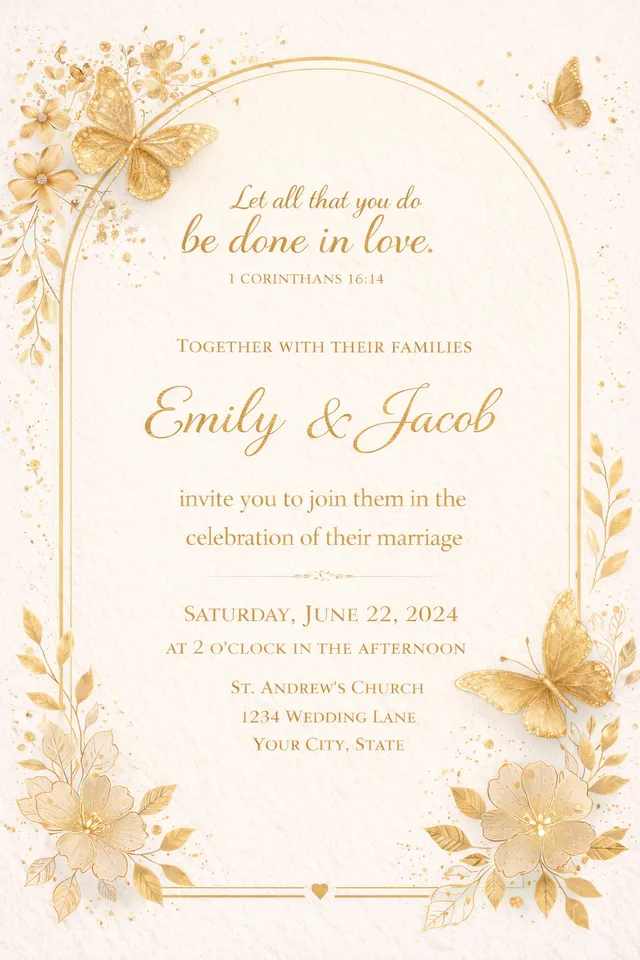
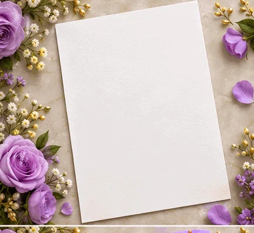
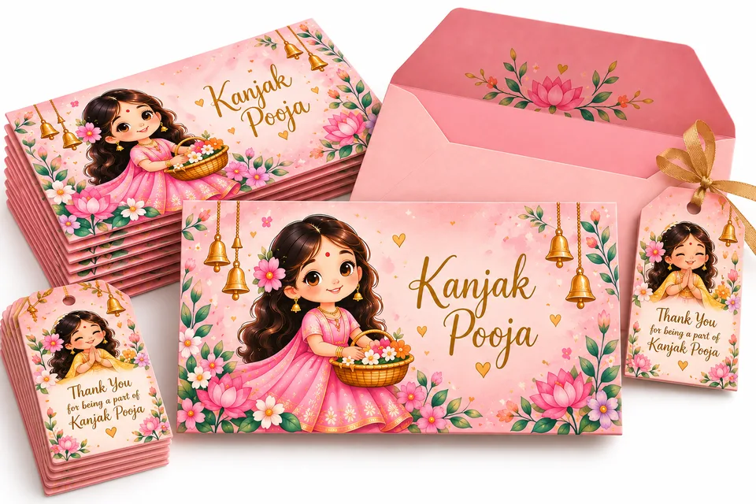
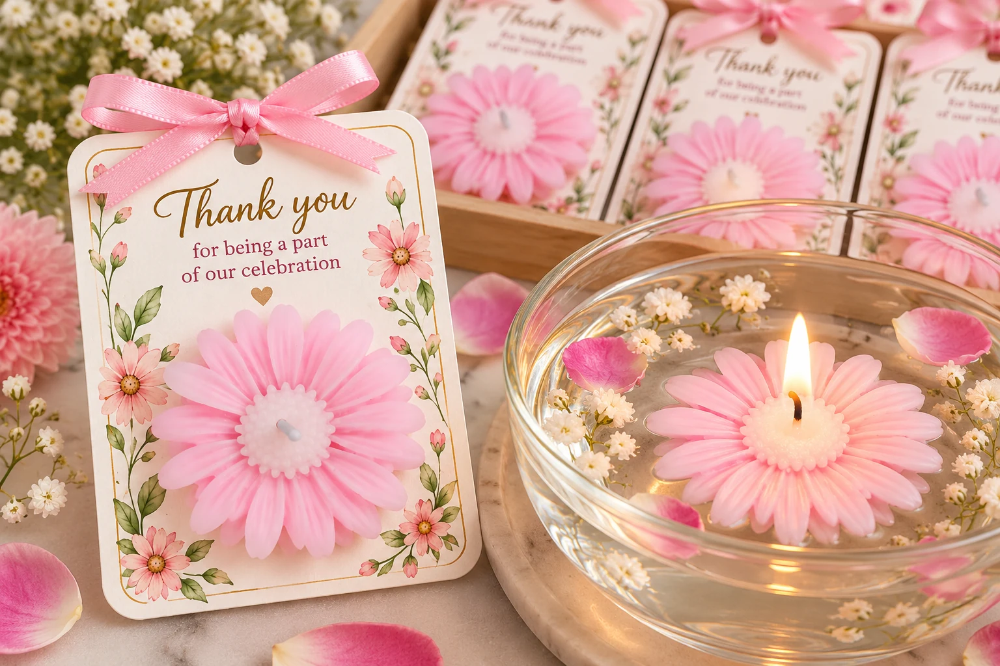
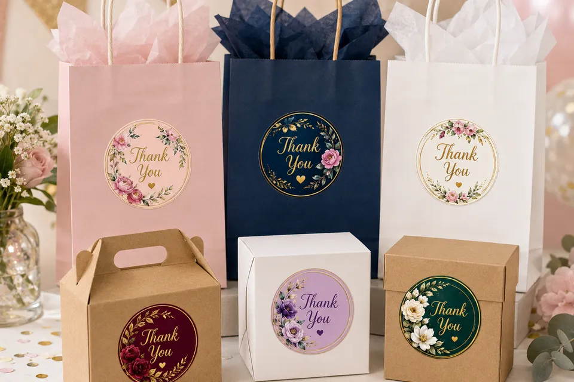
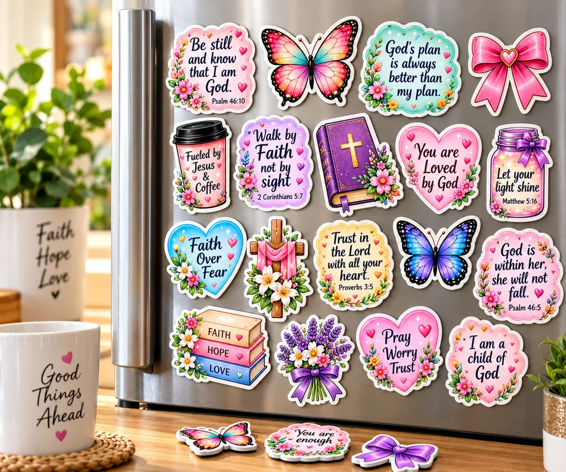

Wedding Stationery Ideas: Invitations, Shagun Envelopes and Return Gift Tags
Wedding season starts right after Diwali, and the small printed details are what guests hold on to. Here are six ideas we design and print in Goa, personalised with your names and delivered across India in about 5 to 6 days after you approve the design.
1. Printed wedding invitations
Our ivory invitation with gold butterflies and an arched gold frame suits a classic church, temple or garden wedding. We add your names, date, venue and family details, and can change the wording or language.

2. Animated digital invites for WhatsApp
Most guests now get the invite on their phone first. We make animated digital invitations in lilac, blush or purple floral themes that you can forward to every family group in seconds, and match them to your printed cards.

3. Shagun envelopes with your names
Personalised money envelopes make giving and receiving shagun feel special, and they help the family keep track of blessings. We print them with the couple's names or a family message.

4. Thank-you tags for return gifts
Tie a small tag with the couple's names and a thank-you line onto sweet boxes, dry fruit packs or favours, so every guest remembers whose wedding it came from.

5. Floral Thank You stickers
Seal favour boxes, hamper bags and mehendi kits with round floral stickers. They are quick to apply and make plain packaging look finished.

6. Fridge magnets as keepsake favours
A magnet with the couple's names, wedding date or a photo stays on guests' fridges for years. A lasting return gift that costs less than most sweets.

Planning a wedding or helping someone plan one?
Send us the date, the number of guests and what you need, and we will send you designs and a price. Wedding planners and decorators are welcome to ask about bulk rates.
Order on WhatsApp Shop on AmazonAlso see our 7 personalised Diwali gift ideas and Children's Day gift ideas.